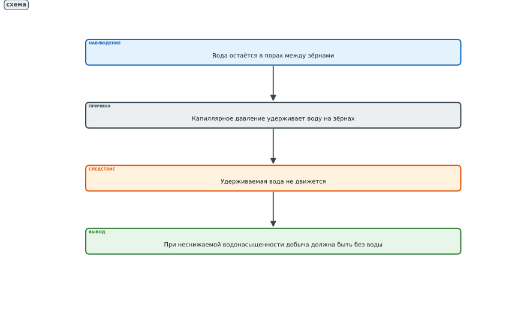

Стр. 131 · BULK VOLUME WATER
The product of a formation's water saturation ($S_w$) and its porosity ($\phi$) is the bulk volume of water ($BVW$).
Log InterpretationШаг 29 из 66
В книге: «BULK VOLUME WATER» стр. 131
Опирается на: шаг 8 «Как оценить воду вдали от ствола» (предпосылка), шаг 9 «Вода не равна продуктивности» (предпосылка), шаг 28 «Сопротивление пласта с водой» (предпосылка)
Вода может присутствовать в порах, но не поступать в скважину.
По доле воды на разных глубинах авторы судят, удерживается ли она породой.
Пороговая идея. Вода в порах не обязательно движется при добыче: при неснижаемой водонасыщенности она удерживается на зёрнах. модель



Вывести вопрос о воде в порах без утверждения о конкретном пласте.
Допущения: Каталог не содержит отдельного вида масштаба пор; схема передаёт причинность, но не геометрию пор.; Нет условных порогов или размеров..
Объёмная доля воды — доля общего объёма породы, занятая водой. Она равна пористости, умноженной на водонасыщенность неизменённой зоны: $BVW=S_w\phi$. стр. 131
«The product of a formation's water saturation ($S_w$) and its porosity ($\phi$) is the bulk volume of water ($BVW$).»
Почти постоянная объёмная доля воды на нескольких глубинах указывает на единый тип породы и неснижаемую водонасыщенность. Этот признак ищут по нескольким глубинам, а не по одной точке. стр. 131
«If values for bulk volume water, calculated at several depths in a formation, are constant or very close to constant, they indicate that the zone is of a single rock type and»
«If values for bulk volume water, calculated at several depths in a formation, are constant or very close to constant, they indicate that the zone is of a single rock type and at irreducible water saturation ($S_{w\ irr}$).»
Неснижаемая водонасыщенность — состояние, когда вода остаётся на зёрнах в неизменённой части пласта. Капиллярное давление удерживает её там. По описанию авторов, следствие такое: Капиллярное давление удерживает воду на зёрнах. Вода не перемещается. Добыча углеводородов должна идти без воды. стр. 131
«When a zone is at irreducible water saturation, water in the uninvaded zone ($S_w$) does not move because it is held on grains by capillary pressure.»
«Therefore, hydrocarbon production from a zone at irreducible water saturation should be water free (Morris and Biggs, 1967).»
Решение на данных
Сравните объёмную долю воды на нескольких глубинах. стр. 131
Почти постоянные значения указывают на удержание воды и единый тип породы.
Дано: Объёмная доля воды почти не меняется по нескольким глубинам. (модель)
Постоянство произведения указывает на оба состояния.
Дано: Вода удерживается на зёрнах при неснижаемой водонасыщенности. (модель)
Удерживаемая вода не перемещается.
Объёмная доля воды в породе. стр. 131
| Обозначение | Что это | Единицы |
|---|---|---|
| $BVW$ | объёмная доля воды в породе | доля |
| $S_w$ | водонасыщенность неизменённой зоны | доля |
| $\phi$ | пористость, доля объёма породы, занятая порами | доля |
Ошибка: Если в порах есть вода, скважина обязательно будет добывать воду.
На самом деле: При неснижаемой водонасыщенности вода удерживается на зёрнах, и углеводороды должны добываться без воды. стр. 131
Из данных о заполнении пор переходят к признаку подвижности воды.
Проверить инвариант по строкам, а не судить по одной колонке.
Где аналогия перестаёт работать: Здесь устойчивость объясняется удержанием воды в породе, а не ограничением схемы данных.
Верный ответ: Единый тип породы; Неснижаемая водонасыщенность
Авторы связывают постоянство по глубине с двумя признаками. Где это в тексте (стр. 131) →
Расставьте причину и последствия неснижаемой водонасыщенности.
Перетащите пункты (мышью или пальцем за ⠿) или двигайте кнопками ↑ ↓.
Верный ответ: Капиллярное давление удерживает воду на зёрнах → Вода не перемещается → Углеводороды добываются без воды
Авторы объясняют отсутствие добываемой воды удержанием на зёрнах. Где это в тексте (стр. 131) →
Все утверждения шага с дословной цитатой автора и страницей книги (по PDF).
Объёмная доля воды — произведение пористости пласта и его водонасыщенности. наблюдение
«The product of a formation's water saturation ($S_w$) and its porosity ($\phi$) is the bulk volume of water ($BVW$).»
Постоянные или почти постоянные значения доли воды на нескольких глубинах указывают на единый тип породы. вывод
«If values for bulk volume water, calculated at several depths in a formation, are constant or very close to constant, they indicate that the zone is of a single rock type and»
Та же устойчивость доли воды указывает на неснижаемую водонасыщенность. вывод
«If values for bulk volume water, calculated at several depths in a formation, are constant or very close to constant, they indicate that the zone is of a single rock type and at irreducible water saturation ($S_{w\ irr}$).»
При неснижаемой водонасыщенности вода в неизменённой части пласта неподвижна, поскольку капиллярное давление удерживает её на зёрнах. вывод
«When a zone is at irreducible water saturation, water in the uninvaded zone ($S_w$) does not move because it is held on grains by capillary pressure.»
При неснижаемой водонасыщенности добыча углеводородов должна идти без добычи воды. вывод
«Therefore, hydrocarbon production from a zone at irreducible water saturation should be water free (Morris and Biggs, 1967).»
Стр. 131 · BULK VOLUME WATER
The product of a formation's water saturation ($S_w$) and its porosity ($\phi$) is the bulk volume of water ($BVW$).
Стр. 131 · BULK VOLUME WATER
$$BVW = S_w \times \phi \tag{7.22}$$
Стр. 131 · BULK VOLUME WATER
where:
Стр. 131 · BULK VOLUME WATER
$BVW$ = bulk volume water
Стр. 131 · BULK VOLUME WATER
$S_w$ = water saturation of uninvaded zone
Стр. 131 · BULK VOLUME WATER
$\phi$ = porosity
Стр. 131 · BULK VOLUME WATER
If values for bulk volume water, calculated at several depths in a formation, are constant or very close to constant, they indicate that the zone is of a single rock type and at irreducible water saturation ($S_{w\ irr}$). When a zone is at irreducible water saturation, water in the uninvaded zone ($S_w$) does not move because it is held on grains by capillary pressure. Therefore, hydrocarbon production from a zone at irreducible water saturation should be water free (Morris and Biggs, 1967).
На этот шаг опираются: шаг 30 «Диаграмма Баклса и размер зёрен», шаг 31 «Что говорит разброс точек», шаг 55 «Когда каротаж оценивает проницаемость», шаг 62 «Как читать палетку проницаемости», шаг 65 «Где вода остаётся неподвижной».
Почему вода может не двигаться
Ссылки в ответе ведут к исходному тексту.